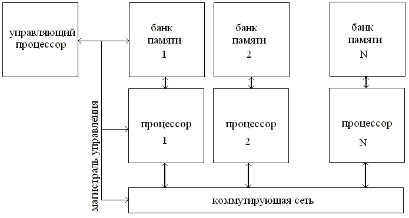
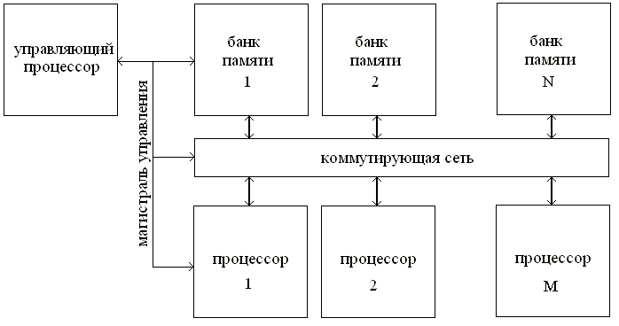
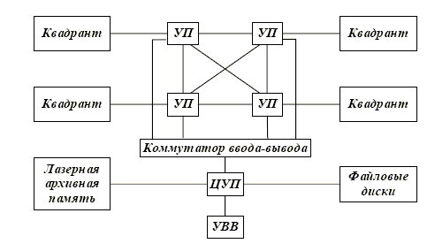
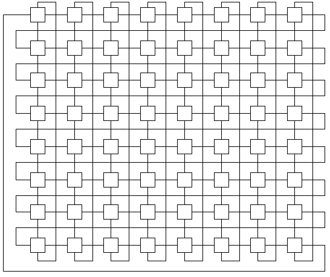
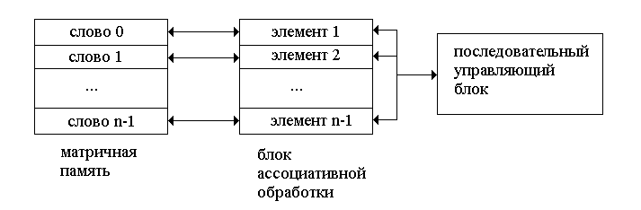
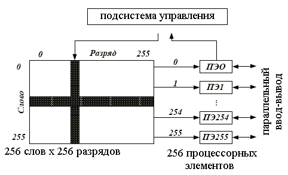

Параллельная обработка [1] информации заключается в том, что любой момент времени в активном состоянии находятся сразу несколько процессов обработки. ВС, производящая параллельную обработку, должна содержать некоторое количество одновременно работающих блоков, на каждом из которых выполняется свой процесс обработки.
Различают два вида параллелизма - крупноблочный и мелкозернистый (МЗП). Отличительная черта крупноблочного параллелизма - относительно небольшое число одновременно работающих блоков с высокой степенью автономности и со сложной структурой. Детальное рассмотрение ВС с крупноблочным параллелизмом будет проведено в главе 5. ВС с мелкозернистым параллелизмом отличаются огромным числом одновременно работающих блоков. Структура и выполняемые операции этих блоков весьма просты.
Наиболее известные из МЗП архитектур - это: матричные, систолические и ассоциативные структуры, нейронные [6] и клеточно-нейронные сети. Различные МЗП архитектуры нацелены на решение разных задач. Так нейронные и клеточно-нейронные сети используются для задач распознавания образов и для задач физического моделирования, матричные подходят для решения систем разностных уравнений и моделирования клеточных автоматов, а ассоциативные структуры эффективны для графовых задач. Хотя все основные МЗП архитектуры допускают аппаратную реализацию, некоторые из них более широко используются как модели, работающие на традиционных ВС (последовательных или параллельных с крупноблочным параллелизмом).
Параллелизм может вводиться в архитектуру различными способами [2]. Конвейерная обработка позволяет одновременно исполнять разные стадии выполнения нескольких команд (см. главу 3) или вычисления значений в АЛУ. Функциональная обработка предусматривает введение в состав ВС нескольких разнотипных устройств, которые работают одновременно и выполняют разные функции. Например, АЛУ может иметь один блок для выполнения сдвиговых операций, один блок для выполнения адресной арифметики, один блок для выполнения операций над целочисленными данными и, наконец, один блок для операций над числами в формате с плавающей запятой. При этом все блоки могут работать одновременно. Матричная обработка означает использование множества одинаковых блоков, контролируемых одним управляющим устройством. Они работают синхронно и применяют одинаковую команду, но к своим копиям данных. Мультипроцессорная обработка предусматривает наличие нескольких процессоров, каждый из которых выполняет свою последовательность команд. В рамках одной ВС может использоваться несколько таких способов введения параллелизма. Некоторые современные многоядерные микропроцессоры, имеющие расширенный набор команд для обработки мультимедиа данных, фактически включают в себя все (!) из перечисленных способов введения параллелизма.
В [2] предложена классификация параллелизма по уровню параллельно исполняемых фрагментов. Будем считать, что уровень выше для более крупных, целостных и независимых фрагментов. Выделены следующие уровни параллелизма:
Уровень заданий - самый высокий уровень параллелизма. Под заданием будем понимать запущенную программу с ее данными в регистрах процессора и оперативной (физической или виртуальной) памяти ВС. Параллелизм на уровне заданий проявляется как возможность исполнять несколько заданий одновременно (если есть параллельная ВС) или псевдопараллельно (режим разделения времени, если ВС - последовательная). Код программы внутри заданий может исполняться как последовательно (если в задании есть только одна нить исполнения), так и параллельно (если в задании есть несколько нитей исполнения). Параллельное или псевдопараллельное исполнение заданий организует ОС. ОС - программа, управляющая работой ВС, организующая выполнение заданий и выделяющая им ресурсы ВС. Параллельное исполнение организуется назначением разных заданий на отдельные процессоры. Псевдопараллельное исполнение организуется с использованием режима разделения процессорного времени. Все задания поочередно исполняются на одном процессоре. Число процессоров и заданий может не совпадать. Чаше случается так, что заданий существенно больше, чем процессоров. В таком случае используется комбинация параллельного и псевдопараллельного исполнения заданий. Часть задач исполняется в режиме разделения на одном процессоре, другие части - на других процессорах.
На программном уровне внутри одного задания параллельно исполняется несколько секций. Будем называть их нитями. Все нити разделяют общую память задания, но имеют свой набор регистров и стек вызовов процедур. Как и задания нити могут исполняться параллельно и псевдопараллельно. Параллельное исполнение нитей на разных процессорах возможно только в архитектурах с разделяемой памятью. Поддержка нитей в задачах может реализовываться либо в ОС (модулем планировщика задач), либо с помощью библиотек языковых сред. В случае поддержки нитей в ядре ОС возможно как их параллельное исполнение при наличии нескольких процессоров или многоядерного процессора, так и исполнение в режиме разделения времени. Если поддержка нитей реализована в библиотеке некоторой языковой среды, то возможно лишь исполнение нитей в режиме разделения времени.
На уровне команд организуется параллельное исполнение нескольких команд. Пример такого параллелизма, например, присутствует в конвейерах команд. В конвейере команды дробятся на отдельные фазы. Разные фазы нескольких команд могут исполняться одновременно.
Параллелизм на арифметическом и разрядном уровне заключается в возможности одновременной обработки в АЛУ группы разрядов или всех разрядов у операндов. Последовательное выполнение операций в АЛУ подразумевает только поразрядную обработку. Существует большое число параллельных реализаций схем выполнения арифметических операций (сложение, умножение и т.д.). Они более сложны и имеют большее число элементов, чем последовательные, но при этом они получают результат за меньшее время.
Существует много классификаций ВС. Классификация Флинна [2, 3] - самая ранняя (1966) из известных. Она делит ВС на четыре класса в зависимости от числа потоков команд и числа потоков обрабатываемых ими данных. Поток - последовательность команд или данных, выполняемая или обрабатываемая процессором.
|
один поток данных |
много потоков данных |
|
|
один поток команд |
SISD |
SIMD |
|
много потоков команд |
MISD |
MIMD |
SISD (single instruction stream / single data stream) - один поток команд / один поток данных.
К SISD относятся последовательные ВС с архитектурой фон Неймана. Эти ВС имеют один центральный процессор, способный обрабатывать только один поток последовательно исполняемых инструкций. Команды работают со скалярными данными. Одна команда может выполнять одну операцию с потоком данных. Для увеличения производительности в SISD может использоваться конвейерная обработка. Примеры машин данного класса - PDP-11, VAX 11/780, CDC 6600, CDC 7700, AMDAHL 470/6.
SIMD (Single Instruction/Multiple Data) - один поток команд / много потоков данных. В данной архитектуре сохраняется один поток данных, но при этом имеются векторные команды. Такие команды могут выполнять одну операцию над многими элементами данных. Примеры машин данного класса - ILLIAC IV, CRAY-1, OMEN-64, ICL DAP, Goodyear Aerospace MPP, Connection Machine 1.
MISD (Multiple Instruction/ Single Data) - один поток данных/много потоков команд. Примеров ВС данного класса нет, он введен только для полноты.
MIMD - (Multiple Instruction/Multiple Data) много потоков данных/много потоков команд. К данному классу относятся все современные многопроцессорные ВС, например, IDV RS/6000 SP, HP 6000, Cray T3E, Cray T90, Sun HPC 10000, NUMA-Q 2000.
Данная классификация пригодна для начальной характеристики ВС. Основной ее недостаток заключается в том, что она не пригодна для рассмотрения современных высокопроизводительных ВС, так как подавляющее их число попадают в один класс - MIMD.
Существуют и другие классификации параллельных ВС. Систематика Шора разбивает параллельные ВС на шесть типов в зависимости от способа организации памяти, количества устройств обработки данных и наличия связей между ними.
1) ВС с архитектурой фон Неймана, имеет одно управляющее устройство и одно устройство обработки данных, все разряды считываются из одного слова памяти (строка битов);
2) ВС, аналогичная первой группе, но имеющая возможность считывать разряд из всех слов памяти, организуя обработку битового столбца;
3) ВС, которая может считывать данные как построчно (биты одного слова), так и столбцами (определенный бит всех слов памяти);
4) ВС, имеющая несколько устройств обработки и ассоциированных с ними блоков памяти;
5) ВС, аналогичная четвертой группе, но имеющая линии передачи данных между соседними устройствами обработки;
6) ВС, в которой функциональные устройства для обработки данных распределены по памяти.
Структурная нотация позволяет в виде формулы описать структуру ВС: состав ее блоков и наличие связей между ними.
Одним из способов введения параллелизма в архитектуру является матричная обработка [2]. ВС с матричной архитектурой содержат матрицу одинаковых процессорных элементов (ПЭ) и одно устройство управления. Все ПЭ работают в дискретном времени, синхронно и выполняют одну команду над собственными данными. Имеется возможность выборочного исполнения отдельной команды. Для этого управляющее устройство маскирует битовый флаг в некоторых ПЭ, отменяя их работу на некотором такте. По классификации Флинна матричные системы - SIMD: одно управляющее устройство исполняет один поток команд, множество ПЭ обрабатывают много потоков данных. По виду параллелизма их можно отнести к системам с мелкозернистым параллелизмом, так как имеется большое число примитивных ПЭ. В реально созданных матричных системах число ПЭ варьируется от нескольких десятков до многих тысяч. По систематике Шора матричные системы относятся к пятому типу.

Рис. 1. Структура матричной ВС при равном количестве ПЭ и блоков памяти

Рис. 2. Структура матричной ВС при разном количестве ПЭ и блоков памяти
В простейшем случае одному ПЭ соответствует собственный блок памяти, и ПЭ соединены между собой (см. рис. 1) коммутационной сетью и могут обмениваться через нее данными. Альтернативный вариант (см. рис. 2) предполагает разное число ПЭ и блоков памяти. У ПЭ нет собственного блока памяти, но он может связываться с разными блоками через коммутационную сеть. Коммутатор для такого варианта усложняется.

Рис. 3. ВС ILLIAC IV.
ILLIAC IV [2, 4, 5] - матричная ВС, построенная в одном экземпляре в университете Иллинойса в 1972 году. Она эксплуатировалась в исследовательском центpе HACA с 1972 по 1981 г .Время цикла - 80нс (проектное - 40нс). Операция сложения выполнялась за 3 такта, умножения - за 5. Размер ОЗУ составляет 131072 слова разрядностью 64 бит. Число ПЭ - 256. Они разбиты на четыре так называемых квадранта (см. рис. 3). Каждый квадрант имеет свое управляющее устройство и матрицу из 64 ПЭ. Одному ПЭ соответствовал один блок памяти. Коммутационная сеть соединяла между собой соседние ПЭ квадранта, ее топология - тор (см. рис. 4). Из четырех запланированных квадрантов реально построен был только один. Кроме него в ВС имелась подсистема ввода-вывода. Она реализована на базе ВС Burroughs B6500.

Рис. 4. Коммутационная сеть квадранта ILLIAC IV.
Один ПЭ содержал АЛУ с полным набором арифметических и логических команд и блок памяти на 2048 64-разрядных слова. Кроме 64-битного формата данных имелись и форматы меньшей разрядности (8, 24, 32, 48). При их использовании ПЭ мог одновременно обрабатывать несколько значений малой разрядности: 8 8-битных, 2 32-битных и т.д. За счет этого при сложении 8-битных чисел могла достигаться производительность почти 10 млрд. операций в секунду. В составе АЛУ имелось 6 программно адресуемых регистров (все, кроме двух - по 64 разряда):
ПЭ имел доступ только к своему блоку памяти. Используя коммутационную сеть, ПЭ мог непосредственно обмениваться данными с четырьмя соседними ПЭ. Такая топология связей позволила обойтись без сложных коммутационных сетей, но ограничила класс задач, при которых данная ВС могла иметь высокую производительность. Например, для моделирования классических клеточных автоматов с окрестностями фон Неймана или Мура коммутационная сеть работала эффективно - все пересылки осуществлялись либо между соседними ПЭ, соединенными непосредственно, либо с одной транзитной пересылкой. Для задач моделирования нейронных сетей или клеточно-нейронных сетей с большой окрестностью потребовалось бы много транзитных пересылок.
Были построены и другие ВС с матричной архитектурой. Burroughs Scientific Processor имел 16 ПЭ и памятью на 64М слова по 56 бит. ICL Distributed Array Processor (DAP) содержал 1024 ПЭ, каждый из которых имел память на 1024 бит (по проекту - 4096 ПЭ с памятью 4096 бит).
В настоящее время, когда доступны дешевые и быстрые микропроцессоры, ВС с матричной архитектурой для исполнения вычислительных задач практически не создаются. Однако матричная архитектура часто используется для специализированных ВС, создаваемых в виде заказных СБИС, и решающих узкие задачи (например, обработка растровых изображений в реальном времени). Также она может использоваться в разнообразных графических сопроцессорах и блоках для обработки мультимедиа данных.
Ассоциативная система - пример параллельной SIMD архитектуры с мелкозернистым параллелизмом. По систематике Шора такие ВС можно отнести ко второму и третьему типам. Ассоциативная система (см. рис. 5) имеет в своем составе блоки:
1) последовательный управляющий блок;
2) блок ассоциативной обработки;
3) матричную память.

Рис. 5. Общая структура ассоциативной системы.
Матричная память и блок ассоциативной обработки состоят из большого числа элементов. Одному слову матричной памяти соответствует один элемент блока ассоциативной обработки. Все слова матричной памяти имеют одинаковую разрядность. На каждом такте работы системы элементы блока ассоциативной обработки производят одинаковую операцию над своим словом в матричной памяти.
К ассоциативным ВС можно отнести STARAN, OMEN-60, PEPE, MPP, CM, Rutgers CAM, ASPRO, IXM2.

Рис. 6. Модуль ассоциативной матрицы ВС STARAN.
Одна из наиболее известных ассоциативных систем - STARAN [5]. Основным ее элементом является многомерная ассоциативная матрица (см. рис. 6) - ассоциативный модуль (АМ). ВС может иметь от 1 до 32 АМ. АМ представляет собой квадрат из 256 разрядов на 256 слов, т. е. содержит в общей сложности 65536 бит данных. Для обработки информации имеется 256 процессорных элементов, которые последовательно, разряд за разрядом, обрабатывают слова. Все ПЭ работают одновременно, по одной команде, выдаваемой устройством управления. Таким образом, сразу по одной команде обрабатываются все выбранные по определенным признакам из памяти слова.
В сравнении с последовательными системами с архитектурой фон Неймана ассоциативные системы дают существенный выйгрыш во времени исполнения для многих классов задач: обработка графов (нахождение минимального остовного дерева, построение транзитивного замыкания), фильтрация сигналов, БПФ, распознавание образов, обработка изображений, задачи реляционной алгебры.
[1] Толковый словарь по вычислительным системам. - М. - Машиностроение. - 1990
[2] Р. Хокни, К. Джессхоуп. Параллельные ЭВМ. - М. - Радио и связь. - 1986
[3] Flynn's taxonomy. - http://en.wikipedia.org/wiki/Flynn's_taxonomy
[4] Головкин Б.А. - Параллельные вычислительные системы. - М. - Наука. - 1980
[5] Ларионов А.М., Майоров С.А., Новиков Г.И. - Вычислительные комплексы, системы и сети. - Ленинград. - Энергоатомиздат. - 1987
[6] Ben Krose Patrick van der Smagt. - An introduction to Neural Networks. - Amsterdam. - The University of Amsterdam. - 1996